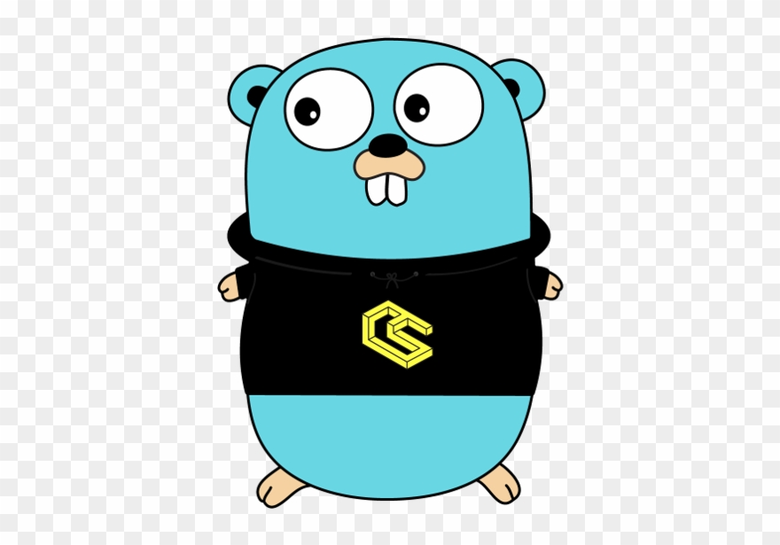

@(工作笔记)
go-record

[TOC]
// %#v a Go-syntax representation of the value
// %% a literal percent sign; consumes no value
// %E scientific notation, e.g. -1.234456E+78
// %F synonym for %f
// %G %E for large exponents, %F otherwise
// %O base 8 with 0o prefix
// %T a Go-syntax representation of the type of the value
// %U Unicode format: U+1234; same as "U+%04X"
// %X base 16, with upper-case letters for A-F
// %X upper-case hexadecimal notation, e.g. -0X1.23ABCP+20
// %b decimalless scientific notation with exponent a power of two, in the manner of strconv.FormatFloat with the 'b' format, e.g. -123456p-78
// %c the character represented by the corresponding Unicode code point
// %d base 10
// %e scientific notation, e.g. -1.234456e+78
// %f decimal point but no exponent, e.g. 123.456
// %g %e for large exponents, %f otherwise. Precision is discussed below.
// %o base 8
// %q a single-quoted character literal safely escaped with Go syntax.
// %t the word true or false
// %v the value in a default format when printing structs, the plus flag (%+v) adds field names
// %x base 16, with lower-case letters for a-f
// %x hexadecimal notation (with decimal power of two exponent), e.g. -0x1.23abcp+20
//========================
// %#v 值的Go语法表示形式
// %% 一个文字百分号；不消耗任何价值
// %E 科学计数法，例如-1.234456E + 78
// %F 是％f的同义词
// %G 对于大指数为％G％E，否则为％F
// %O 以8o为前缀的基数为8
// %T 值类型的Go语法表示形式
// %U Unicode格式：U + 1234;与“ U +％04X”相同
// %X 以16为基，A-F为大写字母
// %X 大写十六进制表示法，例如-0X1.23ABCP + 20
// %b 指数为2的无十进制科学计数法，采用strconv.FormatFloat的形式为'b'格式，例如-123456p-78
// %c 由相应的Unicode代码点表示的字符
// %d 以10为基础的％d
// %e 科学计数法，例如-1.234456e + 78
// %f 小数点，但没有指数，例如123.456
// %g ％e用于大指数，否则％f。精度将在下面讨论。
// %o 以8为底
// %q 用Go语法安全地转义的单引号字符文字。
// %t 单词true或false
// %v 打印结构时，％v以默认格式显示值，加号（％+ v）添加字段名称
// %x 以16为基，a-f为小写字母
// %x 十六进制表示法（具有两个指数的十进制幂），例如-0x1.23abcp + 20
在Gogland中禁用调试输出
https://stackoverflow.com/questions/46103808/disable-debug-output-in-gogland
Go导入的包，函数名必须大写
导入一个包后，你可以根据包名输出。 在Go语言中，一个可以输出的名称开头字母是大写的。 Foo是一个输出名字，因为F是大写的，而foo是不可以输出的。 运行下面的代码，把math.pi的p改成P试一下。
https://blog.csdn.net/u010412301/article/details/79409415
golang 之 import 和 package 的使用
https://studygolang.com/articles/18395
点操作
package main
import (
"fmt"
. "foo/bar/baz"
)
func main() {
fmt.Println(Hello(), World()) // 直接使用包内的方法即可 不需要显式使用包名
}
. 导入可以让包内的方法注册到当前包的上下文中，直接调用方法名即可，不需要再加包前缀。
普通操作
import (
"fmt"
"log"
"foo/bar/baz"
)
普通导入就是按照加载机制，将要使用的包导入进来，然后使用 packageName.MethodName 的方式调用包内的方法即可。注意如果要包方法在其他包中可以调用，包方法需要首字母大写，例如：fmt.Println() fmt.Printf()。
别名操作
package main
import (
"fmt"
myBaz "foo/bar/baz"
)
func main() {
fmt.Println(myBaz.Hello(), myBaz.World())
}
如果两个包的包名存在冲突，或者包名太长需要简写时，我们可以使用别名导入来解决。
下划线操作
package main
import (
"fmt"
_ "foo/bar/baz"
)
func main() {
fmt.Println(baz.Hello(), baz.World()) // 错误 _ 并没有导入包 只是引入并执行包模块的 init 方法
}
_ 是包引用操作，只会执行包下各模块中的 init 方法，并不会真正的导入包，所以不可以调用包内的其他方法。
相信对很多 phper 来说遵循 PSR4 的 Namespace 会将与路径紧密相关命名空间也作为类名的一部分，而 golang 则只将模块目录文件夹名作为包名，前面的路径只是用来导入而和包名无关，还是有一点点需要注意的。
golang字符串去除空格和换行符
package main
import (
"fmt"
"strings"
)
func main() {
str := "welcome to cn\nbattle\n.com"
// 去除空格
str = strings.Replace(str, " ", "", -1)
// 去除换行符
str = strings.Replace(str, "\n", "", -1)
fmt.Println(str)
}
自定义时间格式
在看代码之前，先问一个关键问题：你懂 2006-01-02 15:04:05 么？不懂还是看代码吧！
package main
import (
"fmt"
"time"
)
func main() {
// 使用系统默认格式打印当前时间
t1 := time.Now();
fmt.Println("t1:", t1)
// 自定义格式，相当于Java中的时间格式：yyyy-MM-dd HH:mm:ss
t2 := t1.Format("2006-01-02 15:04:05")
fmt.Println("t2:", t2)
// 换个时间定义格式不行么？答案：不行
t3 := t1.Format("2018-10-01 15:18:00")
fmt.Println("t3:", t3)
// 自定义解析时间字符串格式
t4, _ := time.Parse("2006-01-02 15:04:05", "2018-10-01 14:51:00")
fmt.Println("t4:", t4)
}
示例输出：
t1: 2018-10-01 15:35:54.7057525 +0800 CST m=+0.006020701
t2: 2018-10-01 15:35:54
t3: 1108-100-10 15:108:00
t4: 2018-10-01 14:51:00 +0000 UTC
简而言之，其他常规语言使用字母 “ymd” 编写时间格式，而 golang 使用固定的时刻 "2006-01-02 15:04:05" 编写时间格式。 优点就是所见即所得，立刻看到效果，缺点就是，你要记住这个时刻，这是目前为止遇到的第一个挑战。至于为什么是这个时时刻？它有什么意义？我不知道。
数组是值类型
https://www.cnblogs.com/liuzhongchao/p/9159896.html
在 Go 中数组是值类型而不是引用类型。这意味着当数组变量被赋值时，将会获得原数组（译者注：也就是等号右面的数组）的拷贝。新数组中元素的改变不会影响原数组中元素的值。
package main
import "fmt"
func main() {
a := [...]string{"USA", "China", "India", "Germany", "France"}
b := a // a copy of a is assigned to b
b[0] = "Singapore"
fmt.Println("a is ", a)
fmt.Println("b is ", b)
}
上面程序的第 7 行，将数组 a 的拷贝赋值给数组 b。第 8 行，b 的第一个元素被赋值为 Singapore。这将不会影响到原数组 a。程序的输出为：
a is [USA China India Germany France]
b is [Singapore China India Germany France]
如何列出接口类型中的方法名称？
t := reflect.TypeOf((*FooService)(nil)).Elem()
var s []string
for i := 0; i < t.NumMethod(); i++ {
s = append(s, t.Method(i).Name)
}
t := reflect.TypeOf(stat)
var s []string
for i := 0; i < t.NumMethod(); i++ {
method := t.Method(i)
s = append(s, method.Name)
}
DLog(s, `s`, Info(FM(0)))
等待主函数
package main
import (
"fmt"
)
func producer(c chan int) {
for {
c <- "Ping"
}
}
func customer(c chan string) {
for {
msg := <- c
fmt.Println("Pick", msg)
}
}
func main() {
bufferChan = make(chan int, 3)
go producer(bufferChan)
go customer(bufferChan)
var input string
// 让 main 函数使用的 goroutine 等着...
fmt.Scanln(&input)
}
Wait for goroutines to finish
var wg sync.WaitGroup // 1
func routine(i int) {
defer wg.Done() // 3
fmt.Printf("routine %v finished\n", i)
}
func main() {
wg.Add(10) // 2
for i := 0; i < 10; i++ {
go routine(i) // *
}
wg.Wait() // 4
fmt.Println("main finished")
}
等待 goroutine 结束
https://mozillazg.com/2014/10/go-wait-all-goroutines-end.html
使用 sync.WaitGroup
使用 chan
time.Second
time.Millisecond
time.Microsecond
time.Nanosecond
1s
1ms
1µs
1ns
秒
毫秒
微秒
纳秒
1秒 = 1000毫秒
1毫秒 = 1000微秒
1微秒 = 1000纳秒
1纳秒 = 1000皮秒
1s = 1000ms
1ms = 1000μs
1μs = 1000ns
1ns = 1000ps